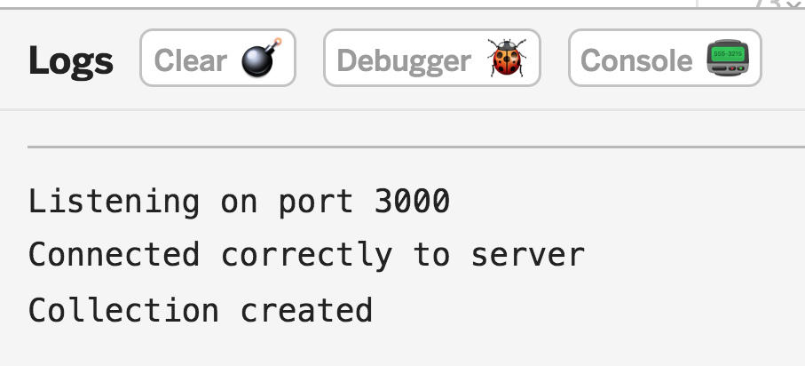

Project Journal: December, 26, 2018
Today was quite a dive into MongoDB. Yesterday I was having trouble wrapping (pun intended) my head around Mongoose, especially when it comes to making CRUD operations from HTTP requests.
As a newbie, I tend to overcompensate my ignorance with information overload. Sometimes it's effective, other times it's not. The jury's still out, but today's dive was fun:
Understanding MongoDB
What leads me to information overload is the desire to peel back any immediately available abstractions. In this case, Mongoose is the culprit of the abstraction and I'm gambling that this abstraction is keeping me from Understanding the core concepts of MongoDB.
Another wonderfully open-source curriculum I have been a beneficiary of: NodeSchool. Thus far, I have enjoyed and completed the following "workshoppers", which are standalone curricula that you can install via npm:
That last one is the workshopper I did today. Because it was written for a previous version of MongoDB, it helped me understand some of the following concepts:- A new
MongoClient.connect()provides the client, and not the database, in its callback client.db()accepts the database name and returns that database instanceclient.close()closes the connection
Replacing Mongoose with MongoClient
For now, I've chosen to revise my app so that it uses MongoDB directly instead of Mongoose. I started by replacing the
mongoose.connect() method with the following:
const client = new MongoClient(MONGO_URI,
{ useNewUrlParser: true });
client.connect(function(err) {
assert.equal(null, err);
console.log("Connected correctly to server");
// Get instance of database on mLab
let db = client.db(dbName);
// Create new collection, then close the connection
createIssueCollection(db, function() {
client.close();
});
});
The purpose of the createIssueCollection() function is to create a new collection and close the client if
the collection was created. The validator in the Collection constructor takes the place of Mongoose's Schema.
function createIssueCollection(db, callback) {
db.createCollection('issueCollection', {
validator: {
$jsonSchema: {
issueSchema
}
}
}, function(err, results) {
assert.equal(null, err);
console.log('Collection created');
callback();
});
}
This hurdle was passed, and the success messages came through on the console:

Hopefully tomorrow I can get the CRUD operations working and then start bringing the routes into the picture.
Another great Syntax episode
As I was working on the learnyoumongo workshopper, I had to go through and setup the bash_profile, among other bash related tasks, which made me revisit my inexperience with bash.
"I wonder if they have an episode about bash..."
Lo and behold! They do. Well, at least about the terminal in general.